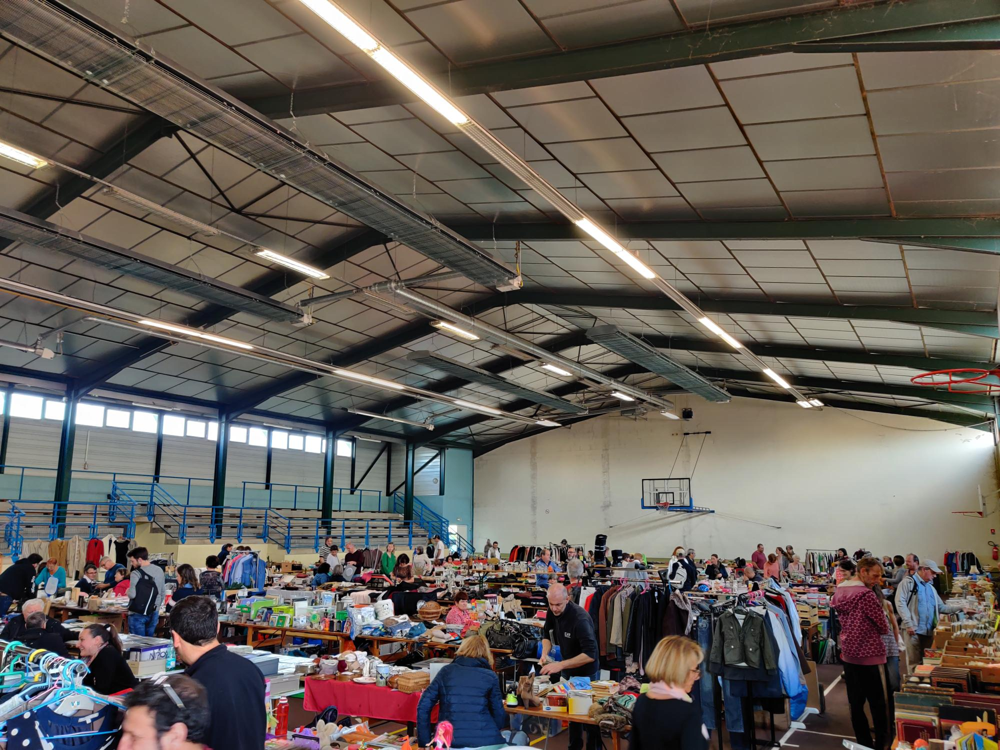
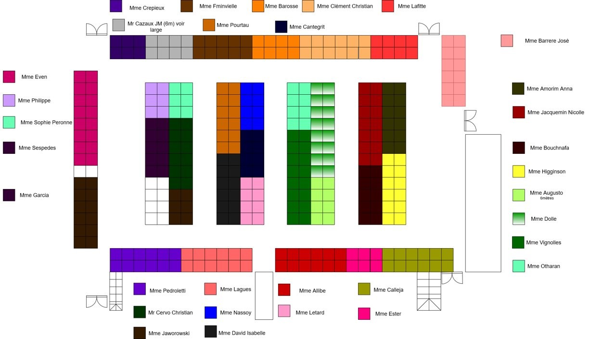
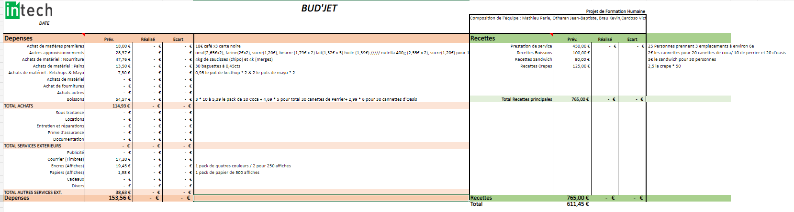

Afin d'organiser un vide-greniers il faut planifier un ensemble de tâches, contacter les communes, faire la promotion de l’évènement, les réservations et placements des participants puis préparer la restauration. Ce projet a considérablement consolidé mes compétences humaines, j’en ai un très bon souvenir avec l’arrivée des participants, l’installation des stands, l’ouverture et l’accueil des premiers visiteurs. Nous avons eu de la chance avec la météo ce jour-là, le beau temps a fait venir un plus grand nombre de visiteurs.
Lors du 4ème semestre du cursus INTECH nous devions constituer un annuaire de professionnels pour nous aider à trouver notre prochain stage, alternance et pourquoi pas une entreprise prête à nous embaucher après l’obtention du diplôme. Afin de réaliser cet annuaire professionnel nous avions besoin d’argent pour les frais de déplacement et de logement.
Pour financer ces frais, nous avons donc décidé d’organiser un vide-greniers.
L’objectif était de réaliser un vide-greniers, ouvert toute la journée, pour faire un bénéfice avec la restauration, une buvette et les réservations payantes des participants, pour financer le projet de base qui est de se déplacer dans d’autres villes pour réaliser un annuaire professionnel.
Avant de réaliser cet événement, il faut déterminer les risques. L’objectif principal étant de faire un bénéfice, nous devions donc limiter les pertes d’argent, sachant que nous avions des charges comme la promotion du vide-greniers, la location de la salle, les boissons et la nourriture.
Nous devions aussi limiter les investissements, l’argent investi pour la préparation de l’événement provenait des membres du groupe.
Organiser un vide-greniers comporte un ensemble de risques.
Premièrement, le risque juridique, le vide-greniers a été placé sur la voie publique, nous avons donc
respecté les règles de la voirie avec la fermeture de la route. En tant qu’organisateur nous nous
exposons à des risques pénaux si un accident avait lieu.
Deuxièmement, le risque environnemental,
principalement la météo, pour un vide-greniers qui se déroule à la fois à l’extérieur et à
l’intérieur il était important d’avoir une météo convenable pour les participants installés à
l’extérieur, le beau temps permet aussi d’attirer plus de visiteurs donc potentiellement plus de
bénéfice.
Troisièmement, le risque financier, nous devions faire attention avec les dépenses
imprévues, et avoir un budget suffisant.
Pour commencer la préparation du vide-greniers, nous devions trouver une commune qui accepte d’accueillir notre événement.
Nous avons donc passé plusieurs appels aux mairies du département pour obtenir un rendez-vous. Suite à cela la mairie de Tercis-les-Bains a accepté notre offre pour le dimanche 16 février 2020, la commune nous a accordé un prêt de la salle polyvalente, à savoir une grande salle dédiée aux sports avec des gradins. Ce qui correspondait exactement à ce que nous avions besoin à savoir un grand espace pour disposer les tables.
Nous avons eu rendez-vous avec Mme la maire de Tercis-les-Bains, afin de signer des documents pour attester l’autorisation d’organiser la vente au déballage. Une fois la date confirmée nous nous sommes occupés de la communication autour de l’événement.
Pour la communication de cet événement nous avons utilisé des sites web dédiés, des prospectus et des panneaux publicitaires aux ronds-points alentours de la commune. Nous avons reçu beaucoup d’appels pour les participations, il y a une grosse communauté autour des vide-greniers, ce sont des gens habitués à participer aux vide-greniers de la région. Il a donc fallu faire très attention à l’organisation si nous avions potentiellement un grand nombre de participants.
Vous pouvez voir ci-dessous un schéma présentant la disposition des participants dans la salle.
En ce qui concerne, la restauration et la buvette, nous avions estimé les quantités et le prix de vente avant le jour J.
Nous avions prévu un menu sandwichs saucisses ou ventrèches avec boisson et frites. Pour la buvette, nous avions du café, des crêpes et des boissons (eau, coca, jus d’orange). Nous avons donc réalisé un budget pour la journée et passé les commandes nécessaires.
En ce qui concerne le déroulement de la journée, les exposants sont arrivés dès 4h du matin, nous nous sommes occupés de placer les exposants selon leur réservation. Nous avons fait deux équipes une pour les exposants à l’intérieur et une autre pour ceux placés en extérieur. L’arrivée des exposants était sous pression car chacun défend ses intérêts et essaye de récupérer un peu plus de place que prévu, d’où l’importance de bien organiser les placements avant le jour J.
Pour ma part j’étais à l’extérieur pour accueillir et placer les participants.
Globalement, la journée s’est bien déroulée sans soucis, il y a eu beaucoup d’activité le midi en
cuisine pour servir les visiteurs.
Nous avons été aidés pour la restauration par mon parrain et ma mère qui ont pu gérer les grillades
et les frites. Nous nous sommes occupés de servir les boissons et gérer la caisse.
Les exposants nous ont fait un retour concernant l’organisation, certains nous ont confié que ce
vide-greniers organisé par des étudiants était mieux organisé que certains vide-greniers organisés
par des habitués. Nous avons eu de la chance avec la météo pour un mois février, ce qui a amené
beaucoup de visiteurs.
Après le départ des derniers exposants, avec les membres de l’équipe nous nous sommes occupés de remettre en ordre la salle prêtée par la mairie, en faisant le nettoyage et le rangement des nombreuses tables et bancs.
Nous avons ensuite procédé aux comptes, nous avons réussi à tirer un bénéfice d’environ 2000€. Nous n’avions pas du tout prévu cette somme, il y a eu plus de visiteurs que prévu grâce à la météo et donc plus de ventes, notamment le café qui semble être la boisson la plus rentable de ce vide-greniers.
Grâce à ce bénéfice, nous avons pu passer 3 jours à Bordeaux pour constituer l’annuaire professionnel avec plusieurs entretiens individuels pour le stage.
C’était une première fois pour tous les membres de l’équipe, personne n’avait encore réalisé un
projet aussi important, c’est-à-dire avec une attente et un nombre conséquent de personnes.
Je suis très satisfait du résultat de ce projet, nous avons dû faire preuve d’adaptation toute la
journée pour contrer les difficultés rencontrées, le projet fut une réussite donc nous étions très
fiers de nous.
Si je devais refaire un projet similaire, je garderais la même organisation et le même
investissement.